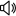
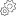

<!DOCTYPE html>
<html lang="pt-br">
<head>
    <meta charset="utf-8">
    <title>Twitch Popup</title>
    <style>
        *{
            margin: 0;
            padding: 0;
            box-sizing: border-box;
        }
        body{
            background-color: #6441A4;
            width: 200px;
            font-family: Impact, Haettenschweiler, 'Arial Narrow Bold', sans-serif;
            font-weight: 50;
        }
        .ch{
            margin: 5px;
            border-radius: 5px;
            background-color: #7251af;
            padding: 5px;
        }
        .ch-flex{
            display: flex;
            align-items: center;           
        }
        .ch-flex span{
            margin-left: 5px;
        }
        .ch-pts{
            float: right;
            cursor: default;
        }
        .ch-name{
            float: left;
            cursor: pointer;
        }
        img[alt='volume']{
            margin-left: 5px;
        }
        svg{
            width: 15px;
            height: 15px;
        }
        footer{
            background-image: linear-gradient(to right, #a48dce, #6441A4 50%);
            width: 50%;
            transition: 1.5s;

        }
        footer:hover{
            background-image: linear-gradient(to right, #a48dce, #6441A4);
            width: 100%;
        }
        .settings{
            cursor: pointer;
        }
        .off{
            text-align: center;
            color: rgb(85, 18, 29);
        }
    </style>
</head>
<body>
    <main>
        <!-- <ul>
            <li>
                <div class="ch">
                    <div class="ch-name ch-flex ChannelName" title="Channel name">
                        
                        <span>Nome</span>
                        
                    </div>

                    <div class="ch-pts ch-flex" title="PointsName">
                        <svg type="color-fill-current" width="20px" height="20px" version="1.1" viewBox="0 0 20 20" x="0px" y="0px" class="ScSvg-sc-1j5mt50-1 jLaQtw"><g><path d="M10 6a4 4 0 014 4h-2a2 2 0 00-2-2V6z"></path><path fill-rule="evenodd" d="M18 10a8 8 0 11-16 0 8 8 0 0116 0zm-2 0a6 6 0 11-12 0 6 6 0 0112 0z" clip-rule="evenodd"></path></g></svg>
                            <span>20 mil</span>
                    </div>

                    <div style="clear:both"></div>
                </div>
            </li>
        </ul>
        <div class="ch off">
            <span>No channels in live</span>
        </div> -->
    </main>
    <footer class="ch settings">
            <div class="ch-flex">
                
                <span>Options</span>
            </div>
    </footer>
    <script src="popup.js"></script>
    <script src="../utils/channelsTemplate.js"></script>
</body>
</html>